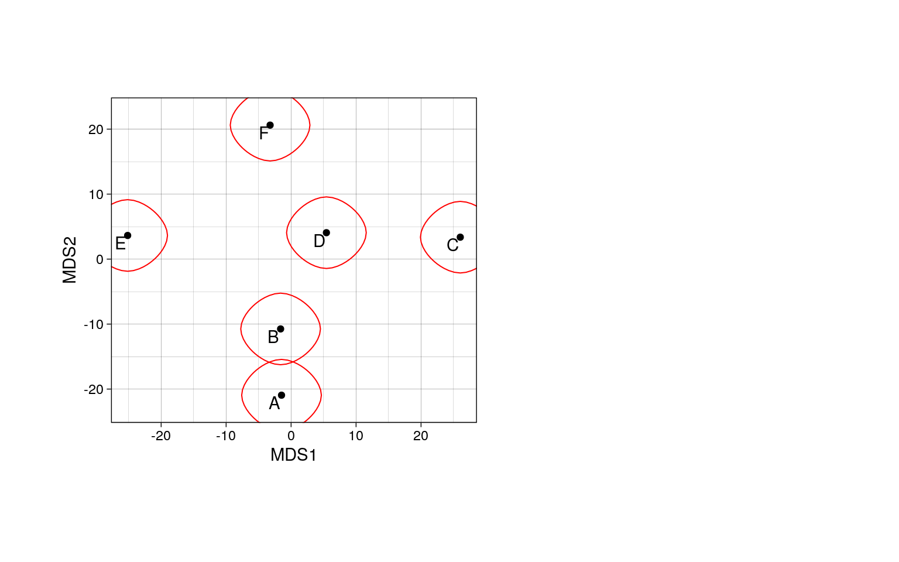
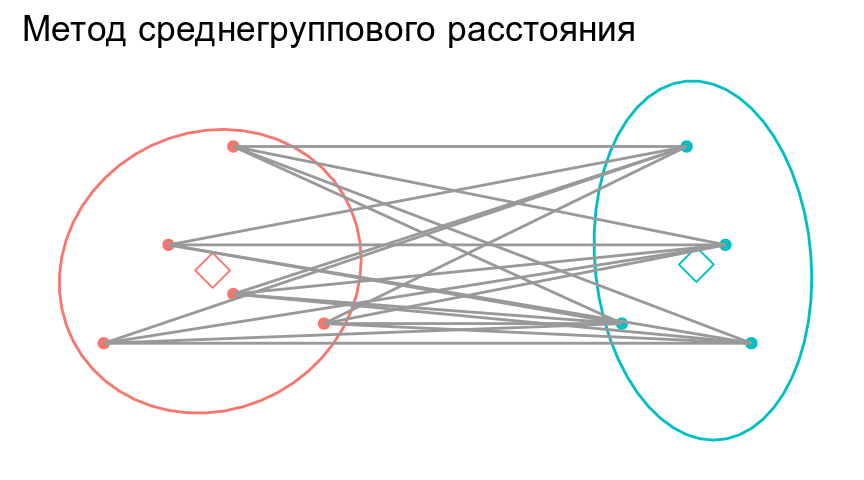
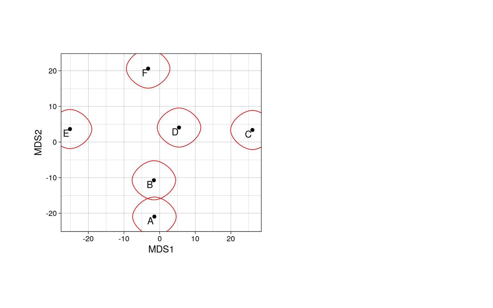
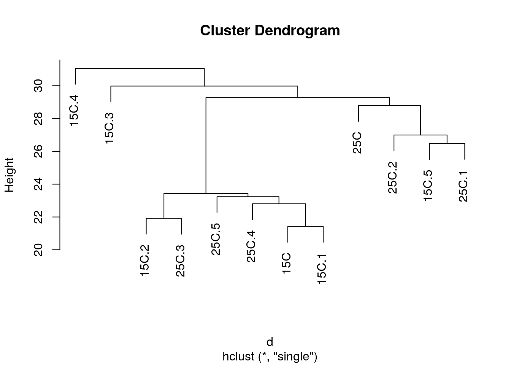
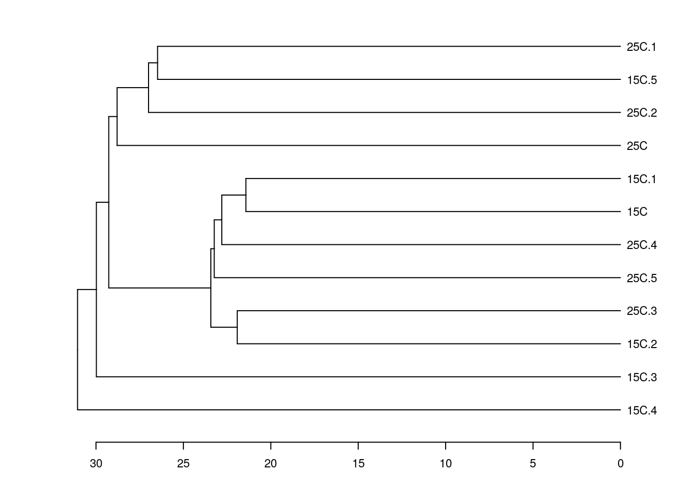
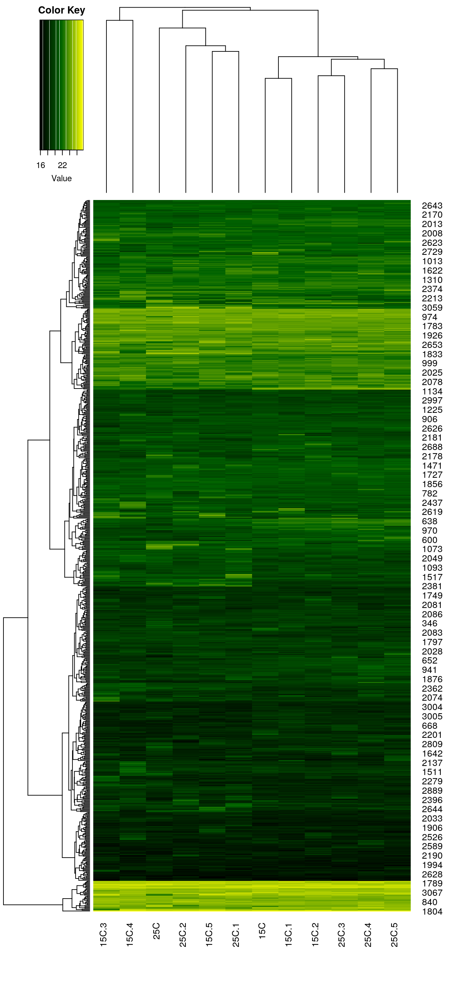
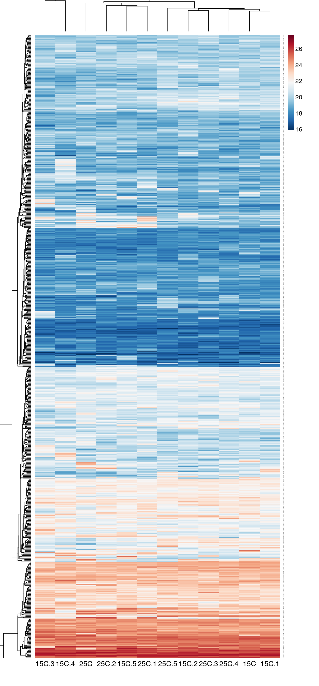
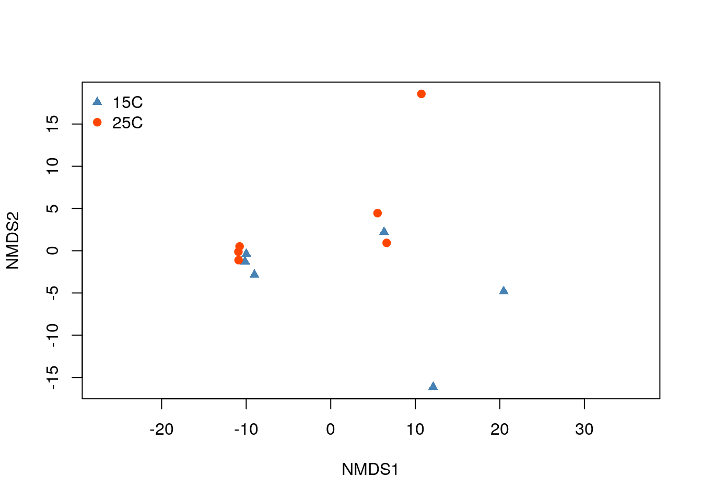

Классификация и ординация
Марина Варфоломеева
В этом разделе мы поговорим о том, как делать кластерный анализ и строить тепловые карты экспрессии в R (R Core Team 2021).
Данные о протеоме жабр гребешка Pecten maximus от авторов пакета
prot2D(Artigaud et al. 2013):Данные о протеоме сыворотки крови пациентов, страдающих разной степенью гиперплазии предстательной железы, из пакета
digeR(Fan et al. 2009):Пакеты (инсталлируйте при необходимости)
# Из репозитория CRAN
install.packages(c("dendextend", "ape", "vegan", "pvclust", "gplots", "NMF"), dependencies = TRUE)Многомерные данные
Облако точек в многомерном пространстве
Когда признаков много, можно представить все объекты как облако точек в многомерном пространстве.

Migration by Don McCullough on Flickr
Для изображения N объектов в идеале нужно N-1 измерений
- 2 объекта = 1D прямая
- 3 объекта = 2D плоскость
- 4 объекта = 3D объем
- …
- N объектов = (N-1)-мерное пространство
Многомерное пространство сложно изобразить. Есть два пути:
- Выбрать наиболее информативную проекцию (не все можно хорошо спроецировать).
- Сохранить отношения между объектами (придется исказить расстояния).

black shadows for a white horses / les negres ombres dels cavalls blancs by Ferran Jordà on Flickr
Коэффициенты сходства-различия
Различия
\(d \ge 0\)
Сходства
\(0 \le S \le 1\) или \(-1 \le S \le 1\)
- Используются в качестве исходных данных для многих видов многомерных анализов, в т.ч. для иерархического кластерного анализа
- Из сходств можно получить различия и наоборот
- Свои собственные коэффициенты существуют для количественных и качественных признаков
Евклидово расстояние
Для двумерного пространства Евклидово расстояние рассчитывается так:
Т.е. Евклидово расстояние в этом гипотетическом примере будет
Для пространства с большим числом измерений формула Евклидова расстояния выглядит так:

Евклидово расстояние — это метрика.
Для всех метрик (расстояний) справедливы три свойства:
- Адекватность:
\[d_{A, A} = 0\]
- Симметричность:
\[d_{A, B} = d_{B, A}\]
- Триангулярность:
\[d_{A, B} \le d_{A, C} + d_{C, B}\]
Триангулярность есть только у метрик! Именно потому, что для них выполняется неравенство треугольника, они имеют право называться расстояниями, а не просто мерами различия.
Коэффициент Жаккара
Если используются бинарные данные, то посчитать сходство можно, учитывая присутствие-отсутствие признаков.
| объект I / объект J | признак есть | признака нет |
|---|---|---|
| признак есть | a | b |
| признака нет | c | d |
- \(I\), \(J\) — объекты
- \(a\) — число сходств по наличию признака
- \(b\) — число отличий \(I\) от \(J\)
- \(c\) — число различий \(J\) от \(I\)
- \(d\) — число сходств по отсутствию признака
- \(n_J\) — число признаков у объекта \(J\)
- \(n_I\) — число признаков у объекта \(I\)
- \(n = a + b + c + d\) — общее число признаков
Коэффициентов сходства-различия для качественных данных придумано великое множество.
Коэффициент Жаккара рассчитывается по формуле:
\(S = a / (a + b + c)\), причем \(0 \le S \le 1\)
Соответствующий коэффициент различия Жаккара можно посчитать так:
\(d = 1 - a / (a + b + c) = (b + c) / (a + b + c)\)
У коэффициента Жаккара есть одно забавное свойство. Обратите внимание, в знаменателе фигурирует не общее число признаков — сходство по отсутствию не учитывается! Это свойство очень полезно для работы с протеомными данными. Пятно может отсутствовать на геле не только потому, что белка не было в пробе, но и в силу самых разных других причин (например, экспрессия ниже порога определения, плохо прокрашен образец и проч.).
Например, пусть у нас есть три пробы, у которых мы нашли всего 5 пятен.
| Objects | Spot.1 | Spot.2 | Spot.3 | Spot.4 | Spot.5 |
|---|---|---|---|---|---|
| Object 1 | 1 | 1 | 0 | 1 | 0 |
| Object 2 | 1 | 1 | 1 | 1 | 0 |
| Object 3 | 0 | 0 | 0 | 1 | 0 |
Чтобы оценить различие между этими пробами, можно посчитать коэффициент Жаккара.
| Object 1 | Object 2 | Object 3 | |
|---|---|---|---|
| Object 1 | 0.00 | 0.25 | 0.67 |
| Object 2 | 0.25 | 0.00 | 0.75 |
| Object 3 | 0.67 | 0.75 | 0.00 |
Точно так же, чтобы оценить различие белков, можно посчитать коэффициент Жаккара между белками.
| Spot 1 | Spot 2 | Spot 3 | Spot 4 | Spot 5 | |
|---|---|---|---|---|---|
| Spot 1 | 0.00 | 0.00 | 0.50 | 0.33 | 1 |
| Spot 2 | 0.00 | 0.00 | 0.50 | 0.33 | 1 |
| Spot 3 | 0.50 | 0.50 | 0.00 | 0.67 | 1 |
| Spot 4 | 0.33 | 0.33 | 0.67 | 0.00 | 1 |
| Spot 5 | 1.00 | 1.00 | 1.00 | 1.00 | 0 |
Визуализация многомерных данных
- Дендрограммы
- Танглграммы
- Тепловые карты
- Ординация
Иерархическая кластеризация
Существует много методов классификации: методы кластеризации на основании расстояний и методы кластеризации на основании признаков.
В этом курсе мы будем затрагивать только методы иерархической кластеризации на основании расстояний.
Классификация данных проходит в несколько этапов. Результат кластеризации будет сильнее всего зависеть (1) от выбора коэффициента сходства-различия и (2) от алгоритма кластеризации. Нет формальных способов выбрать наиболее подходящий коэффициент и алгоритм.
Алгоритмы иерархической кластеризации на основании расстояний
Мы рассмотрим несколько алгоритмов, которые строят иерархическую кластеризацию объектов на основании матрицы различий между ними:
- Метод ближайшего соседа
- Метод отдаленного соседа
- Метод среднегруппового расстояния

Метод ближайшего соседа (= nearest neighbour = single linkage)
- к кластеру присоединяется ближайший к нему кластер/объект
- кластеры объединяются в один на расстоянии, которое равно расстоянию между ближайшими объектами этих кластеров

Особенности:
- Может быть сложно интерпретировать, если нужны группы
- объекты на дендрограмме часто не образуют четко разделенных групп
- часто получаются цепочки кластеров (объекты присоединяются как бы по-одному)
- Хорош для выявления градиентов
## Registered S3 methods overwritten by 'ggalt':
## method from
## grid.draw.absoluteGrob ggplot2
## grobHeight.absoluteGrob ggplot2
## grobWidth.absoluteGrob ggplot2
## grobX.absoluteGrob ggplot2
## grobY.absoluteGrob ggplot2
Метод отдаленного соседа (= furthest neighbour = complete linkage)
- к кластеру присоединяется отдаленный кластер/объект
- кластеры объединяются в один на расстоянии, которое равно расстоянию между самыми отдаленными объектами этих кластеров (следствие - чем более крупная группа, тем сложнее к ней присоединиться)

Особенности:
- На дендрограмме образуется много отдельных некрупных групп
- Хорош для поиска дискретных групп в данных

Метод невзвешенного попарного среднего (= UPGMA = Unweighted Pair Group Method with Arithmetic mean)
- кластеры объединяются в один на расстоянии, которое равно среднему значению всех возможных расстояний между объектами из разных кластеров.

Особенности:
- UPGMA и WUPGMС иногда могут приводить к инверсиям на дендрограммах
Инверсии на дендрограммах
из Borcard et al., 2011

Кластерный анализ в R: гребешки
Вспомним, на чем мы остановились в прошлый раз.
library(readxl)
library(limma)
# Данные об экспрессии
pecten <- read_excel(path = "data/pecten.xlsx", sheet = "exprs")
spot_names <- pecten$Spot
pecten <- as.matrix(pecten[, -1])
rownames(pecten) <- spot_names
# Данные о пробах
pecten.fac <- read_excel(path = "data/pecten.xlsx", sheet = "pheno")
pecten.fac <- data.frame(pecten.fac)
pecten.fac$Condition <- factor(pecten.fac$Condition)
# Логарифмируем данные
pecten_log <- log2(pecten)
# Квантильная нормализация
pecten_norm <- normalizeQuantiles(as.matrix(pecten_log))Названия проб в этом файле — длинные непонятные аббревиатуры.
colnames(pecten_norm)## [1] "Br_23865" "Br_23883" "Br_23884" "Br_23728" "Br_23729" "Br_23730"
## [7] "Br_23731" "Br_23732" "Br_23733" "Br_23875" "Br_23876" "Br_23877"
Вместо них нужно создать осмысленные и краткие лейблы для проб.
Информацию о лейблах возьмем из датафрейма с факторами
head(pecten.fac)## Sample Condition
## 1 Br_23865 15C
## 2 Br_23883 15C
## 3 Br_23884 15C
## 4 Br_23728 15C
## 5 Br_23729 15C
## 6 Br_23730 15C
colnames(pecten_norm) <- make.unique(as.character(pecten.fac$Condition))Чтобы строить деревья для проб, нам понадобится транспонировать исходные данные
tpecten_norm <- t(pecten_norm)Давайте построим деревья при помощи нескольких алгоритмов кластеризации (по стандартизованным данным, с использованием Евклидова расстояния) и сравним их. Нам понадобится матрица расстояний.
d <- dist(x = tpecten_norm, method = "euclidean")# Метод ближайшего соседа
hc_single <- hclust(d, method = "single")Деревья можно визуализировать при помощи базовой графики, но у нее довольно мало возможностей для настройки внешнего вида.
# ?plot.hclust
plot(hc_single)
Визуализируем средствами пакета ape (Paradis and Schliep 2019).
library(ape)##
## Attaching package: 'ape'## The following objects are masked from 'package:dendextend':
##
## ladderize, rotateph_single <- as.phylo(hc_single)
# ?plot.phylo
plot(ph_single, type = "phylogram", cex = 0.7)
axisPhylo()
Визуализируем средствами dendextend (Galili 2015).
library(dendextend)
den_single <- as.dendrogram(hc_single)
# ?plot.dendrogram
op <- par(mar = c(4, 4, 1, 4), cex = 0.7)
plot(den_single, horiz = TRUE)
При желании можно раскрасить лейблы. Это можно сделать вручную, просто передав вектор нужных цветов в том порядке, в котором идут лейблы на дендрограмме.
Чтобы не пришлось вручную создавать вектор цветов, можно попробовать при помощи функции вытащить информацию из лейблов на дендрограмме. Эта функция берет дендрограмму, экстрагирует из нее порядок лейблов, берет первые несколько букв в имени лейбла и на основании этого фактора создает вектор цветов.
library(RColorBrewer)
get_colours <- function(dend, n_chars, palette = "Dark2"){
labs <- get_leaves_attr(dend, "label")
group <- substr(labs, start = 0, stop = n_chars)
group <- factor(group)
cols <- brewer.pal(length(levels(group)), name = palette)[group]
return(cols)
}Теперь можно легко раскрасить группы на дендрограмме, ориентируясь на первые несколько символов в названии лейбла.
cols <- get_colours(dend = den_single, n_chars = 2)## Warning in brewer.pal(length(levels(group)), name = palette): minimal value for n is 3, returning requested palette with 3 different levelsden_single_c <- color_labels(dend = den_single, col = cols)
plot(den_single_c, horiz = TRUE)
Задание 1
Постройте дендрограммы, описывающие сходство проб, при помощи методов отдаленного соседа и среднегруппового расстояния.
Метод отдаленного соседа в R
Метод невзвешенного попарного среднего в R
# Метод невзвешенного попарного среднего
hc_avg <- hclust(d, method = "average")
den_avg <- as.dendrogram(hc_avg)
den_avg_c <- color_labels(den_avg, col = get_colours(den_avg, n_chars = 2))## Warning in brewer.pal(length(levels(group)), name = palette): minimal value for n is 3, returning requested palette with 3 different levelsplot(den_avg_c, horiz = TRUE)
Кофенетическая корреляция
Кофенетическая корреляция — метод оценки соответствия расстояний на дендрограмме расстояниям либо в исходном многомерном пространстве, либо на другой дендрограмме.
Кофенетическое расстояние — расстояние между объектами на дендрограмме. Его можно рассчитать при помощи функции из пакета ape, например.
cophenetic(ph_single)## 15C 15C.1 15C.2 15C.3 15C.4 15C.5 25C 25C.1
## 15C 0.00000 21.42511 23.43037 29.97752 31.0542 29.26930 29.26930 29.26930
## 15C.1 21.42511 0.00000 23.43037 29.97752 31.0542 29.26930 29.26930 29.26930
## 15C.2 23.43037 23.43037 0.00000 29.97752 31.0542 29.26930 29.26930 29.26930
## 15C.3 29.97752 29.97752 29.97752 0.00000 31.0542 29.97752 29.97752 29.97752
## 15C.4 31.05420 31.05420 31.05420 31.05420 0.0000 31.05420 31.05420 31.05420
## 15C.5 29.26930 29.26930 29.26930 29.97752 31.0542 0.00000 28.79182 26.47686
## 25C 29.26930 29.26930 29.26930 29.97752 31.0542 28.79182 0.00000 28.79182
## 25C.1 29.26930 29.26930 29.26930 29.97752 31.0542 26.47686 28.79182 0.00000
## 25C.2 29.26930 29.26930 29.26930 29.97752 31.0542 26.99377 28.79182 26.99377
## 25C.3 23.43037 23.43037 21.91978 29.97752 31.0542 29.26930 29.26930 29.26930
## 25C.4 22.80260 22.80260 23.43037 29.97752 31.0542 29.26930 29.26930 29.26930
## 25C.5 23.23561 23.23561 23.43037 29.97752 31.0542 29.26930 29.26930 29.26930
## 25C.2 25C.3 25C.4 25C.5
## 15C 29.26930 23.43037 22.80260 23.23561
## 15C.1 29.26930 23.43037 22.80260 23.23561
## 15C.2 29.26930 21.91978 23.43037 23.43037
## 15C.3 29.97752 29.97752 29.97752 29.97752
## 15C.4 31.05420 31.05420 31.05420 31.05420
## 15C.5 26.99377 29.26930 29.26930 29.26930
## 25C 28.79182 29.26930 29.26930 29.26930
## 25C.1 26.99377 29.26930 29.26930 29.26930
## 25C.2 0.00000 29.26930 29.26930 29.26930
## 25C.3 29.26930 0.00000 23.43037 23.43037
## 25C.4 29.26930 23.43037 0.00000 23.23561
## 25C.5 29.26930 23.43037 23.23561 0.00000
Кофенетическую корреляцию можно рассчитать как Пирсоновскую корреляцию (обычную) между матрицами исходных и кофенетических расстояний между всеми парами объектов
cor(d, as.dist(cophenetic(ph_single)))## [1] 0.9426727
Метод, который дает наибольшую кофенетическую корреляцию дает кластеры лучше всего отражающие исходные данные.
Задание 2
Оцените при помощи кофенетической корреляции качество кластеризаций, полученных разными методами. Какой метод дает лучший результат?
Бутстреп-поддержка ветвей
Вычисление бутстреп-поддержки ветвей дендрограммы поможет оценить, насколько стабильна полученная кластеризация.
“An approximately unbiased test of phylogenetic tree selection” (Shimodaria, 2002)
Этот тест использует специальный вариант бутстрепа — multiscale bootstrap. Мы не просто многократно берем бутстреп-выборки и оцениваем для них вероятность получения топологий (BP p-value), эти выборки еще и будут с разным числом объектов. По изменению BP при разных объемах выборки можно вычислить AU (approximately unbiased p-value).
library(pvclust)## Registered S3 method overwritten by 'pvclust':
## method from
## text.pvclust dendextend# итераций должно быть 10000 и больше, здесь мало для скорости
cl_boot <- pvclust(pecten_norm, method.hclust = "average", nboot = 100,
method.dist = "euclidean", iseed = 278456)## Bootstrap (r = 0.5)... Done.
## Bootstrap (r = 0.6)... Done.
## Bootstrap (r = 0.7)... Done.
## Bootstrap (r = 0.8)... Done.
## Bootstrap (r = 0.9)... Done.
## Bootstrap (r = 1.0)... Done.
## Bootstrap (r = 1.1)... Done.
## Bootstrap (r = 1.2)... Done.
## Bootstrap (r = 1.3)... Done.
## Bootstrap (r = 1.4)... Done.
Дерево с величинами поддержки
AU — approximately unbiased p-values (красный), BP — bootstrap p-values (зеленый)
plot(cl_boot)# pvrect(cl_boot) # достоверные ветвленияЕсли для кластера AU p-value > 0.95, то нулевую гипотезу о том, что он не существует отвергают на уровне значимости 0.05.
Но сами AU p-values оцениваются при помощи бутстрепа, а значит, тоже не точно. Стандартные ошибки можно оценить чтобы оценить точность оценки самих AU. Для диагностики качества оценок AU нам понадобится график стандартных ошибок для AU p-value. Чем больше было бутстреп-итераций, тем точнее будет оценка.
seplot(cl_boot)
seplot(cl_boot, identify = TRUE)## integer(0)
Например, для кластера 8 \(AU =\) 0.5354028, а ее стандартная ошибка \(SE =\) 0.1137272. Границы 95% доверительного интервала к AU p-value: 0.3124975 и 0.758308. Такая оценка значимости не точна.
print(cl_boot)##
## Cluster method: average
## Distance : euclidean
##
## Estimates on edges:
##
## si au bp se.si se.au se.bp v c pchi
## 1 0.906 0.962 0.903 0.052 0.026 0.010 -1.536 0.234 0.718
## 2 0.949 0.980 0.933 0.036 0.017 0.009 -1.775 0.280 0.647
## 3 0.323 0.798 0.412 0.142 0.070 0.016 -0.306 0.527 0.802
## 4 0.094 0.653 0.420 0.133 0.091 0.016 -0.096 0.297 0.893
## 5 1.000 1.000 1.000 0.000 0.000 0.000 0.000 0.000 0.000
## 6 0.345 0.690 0.641 0.120 0.087 0.016 -0.429 0.068 0.643
## 7 0.973 0.992 0.925 0.021 0.008 0.010 -1.915 0.473 0.788
## 8 0.535 0.792 0.708 0.114 0.073 0.015 -0.681 0.134 0.862
## 9 0.343 0.762 0.503 0.131 0.076 0.016 -0.361 0.352 0.228
## 10 0.016 0.659 0.352 0.143 0.092 0.016 -0.015 0.395 0.790
## 11 1.000 1.000 1.000 0.000 0.000 0.000 0.000 0.000 0.000
Задание 3
Повторите бутстреп с 1000 итераций. Чему теперь будет равна стандартная ошибка AU p-value для 8 кластера. Используйте тот же сид, что в прошлом примере.
print(cl_boot)##
## Cluster method: average
## Distance : euclidean
##
## Estimates on edges:
##
## au bp se.au se.bp v c pchi
## 1 0.975 0.905 0.006 0.003 -1.634 0.321 0.261
## 2 0.973 0.929 0.007 0.003 -1.701 0.233 0.601
## 3 0.747 0.409 0.025 0.005 -0.219 0.448 0.744
## 4 0.605 0.401 0.030 0.005 -0.008 0.259 0.787
## 5 1.000 1.000 0.000 0.000 0.000 0.000 0.000
## 6 0.748 0.616 0.025 0.005 -0.482 0.187 0.564
## 7 0.963 0.928 0.009 0.003 -1.624 0.163 0.278
## 8 0.875 0.715 0.017 0.005 -0.860 0.291 0.634
## 9 0.783 0.491 0.023 0.005 -0.380 0.401 0.944
## 10 0.729 0.344 0.027 0.005 -0.104 0.505 0.253
## 11 1.000 1.000 0.000 0.000 0.000 0.000 0.000
Танглграмма
Два дерева (с непохожим ветвлением) выравнивают, вращая случайным образом ветви вокруг оснований. Итеративный алгоритм. Картина каждый раз может получиться немного разная, особенно в сложных случаях.
set.seed(395)
untang_w <- untangle_step_rotate_2side(den_single, den_avg, print_times = F)
# танглграмма
tanglegram(untang_w[[1]], untang_w[[2]],
highlight_distinct_edges = FALSE,
common_subtrees_color_lines = F,
main = "Tanglegram",
main_left = "Single linkage",
main_right = "UPGMA",
columns_width = c(8, 1, 8),
margin_top = 3.2, margin_bottom = 2.5,
margin_inner = 4, margin_outer = 0.5,
lwd = 1.2, edge.lwd = 1.2,
lab.cex = 1, cex_main = 1)
Тепловая карта
library(gplots) # для тепловых карт
# Палитры для тепловых карт
pal_green <- colorpanel(75, low = "black", mid = "darkgreen", high = "yellow")
# library(spatstat) # to convert palette to grayscale
# pal_gray <- to.grey(pal_green, weights=c(1,1,1))dat <- as.matrix(pecten_norm)
heatmap.2(dat, col = pal_green, scale = "none",
key = TRUE, symkey = FALSE,
density.info = "none", trace = "none",
cexRow = 1, cexCol = 1,
keysize = 1, margins = c(8, 5))
# Настройка внешнего вида
heatmap.2(dat, col = pal_green, scale = "none",
key = TRUE, symkey = FALSE,
density.info = "none", trace = "none",
cexRow = 1, cexCol = 1, keysize = 1,
margins = c(8, 5),
key.par = list(mgp = c(1.5, 0.9, 0),
mar = c(3, 1, 3, 0.1), cex = 1),
key.title = NA, key.xlab = NA)Еще один вариант

Ординация
Из множества методов ординации здесь мы рассмотрим только неметрическое многомерное шкалирование.
Неметрическое многомерное шкалирование
Неметрическое многомерное шкалирование (Nonmetric Multidimensional Scaling, nMDS) — метод визуализации отношений между объектами в пространстве с небольшим числом измерений (обычно 2).
Исходные данные для nMDS — матрица расстояний между объектами в многомерном пространстве.
Расстояния по автодорогам между пригородами Санкт-Петербурга
Расстояния по автодорогам не совсем “евклидовы”: например, из Кронштадта до Санкт-Петербурга нельзя добраться по прямой.

При помощи nMDS ординации можно восстановить карту, сохраняя ранги расстояний между объектами.
## species scores not availableЧто странного в этой карте?
Важные свойства nMDS
Ординация сохраняет ранг расстояний между объектами (похожие располагаются близко, непохожие — далеко; если объект А похож на B, больше чем на C, то и на ординации он, скорее всего, окажется ближе к B, чем к C).
На ординации имеет смысл только взаиморасположение объектов. Облако точек в осях MDS можно вращать, перемещать, зеркально отражать. Суть ординации от этого не изменится.
Значения координат точек в ординации лишены смысла (их вообще можно не приводить на итоговой ординации).
Как работает nMDS
nMDS старается сохранить отношения между объектами. Взаиморасположение точек на плоскости ординации подобно взаиморасположению точек исходном многомерном пространстве признаков, но значения не полностью совпадают. У хорошей ординации nMDS ранги расстояний должны совпадать с рангами коэффициентов различия в исходном многомерном пространстве. Это значит, что в идеале, бOльшим расстояниям в исходном пространстве должны соответствовать бOльшие расстояния на ординации, а меньшим — меньшие (т.е. должны сохраняться ранги расстояний).
Стресс (Stress) — мера качества ординации. Он показывает, насколько соответствуют друг другу взаиморасположение точек на плоскости ординации и в исходном многомерном пространстве признаков.
\[ Stress(1) = \sqrt{\frac{\sum_{h < i}{(d_{h,i} - \hat d_{h,i})^2}}{\sum_{h < i}{d_{{h,i}}^2}}}\]
- \(d\) — наблюдаемое значение коэффициента различия между двумя точками
- \(\hat d\) — значение, предсказанное монотонной регрессией
Хорошо, когда \(Stress(1) < 0.2\).
Алгоритм MDS (для двумерного случая)

- Вычисляем матрицу коэффициентов различия между объектами.
- Распределяем объекты на плоскости в случайном порядке (или при помощи PCoA).
- Вычисляем стресс.
- Сдвигаем точки по плоскости так, чтобы минимизировать стресс.
- Повторяем шаги 2-4 несколько раз, чтобы избежать локальных минимумов стресса.
- Обычно финальную ординацию поворачивают, чтобы вдоль оси X было максимальное варьирование.
Ограничения nMDS
- nMDS — метод визуализации данных.
- Коэффициент различия и трансформация данных должны быть выбраны исходя из того, какие именно свойства объектов должны быть визуализированы.
- Число измерений, выбранное для решения, может влиять на результат.
nMDS ординация в R: гребешки
library(vegan)
pecten_ord <- metaMDS(tpecten_norm,
distance = "euclidean",
autotransform = FALSE)## Run 0 stress 0.08158633
## Run 1 stress 0.09081752
## Run 2 stress 0.09823082
## Run 3 stress 0.09078355
## Run 4 stress 0.09823011
## Run 5 stress 0.09078365
## Run 6 stress 0.09823084
## Run 7 stress 0.0816771
## ... Procrustes: rmse 0.01241796 max resid 0.03182757
## Run 8 stress 0.09822995
## Run 9 stress 0.09823039
## Run 10 stress 0.08178897
## ... Procrustes: rmse 0.01492262 max resid 0.03480022
## Run 11 stress 0.08238989
## Run 12 stress 0.08178756
## ... Procrustes: rmse 0.01459091 max resid 0.03351948
## Run 13 stress 0.08171802
## ... Procrustes: rmse 0.01093246 max resid 0.029369
## Run 14 stress 0.09081753
## Run 15 stress 0.08211808
## Run 16 stress 0.09083643
## Run 17 stress 0.09080793
## Run 18 stress 0.08158633
## ... Procrustes: rmse 8.184541e-06 max resid 1.784713e-05
## ... Similar to previous best
## Run 19 stress 0.0982301
## Run 20 stress 0.08158633
## ... New best solution
## ... Procrustes: rmse 6.15476e-06 max resid 1.101896e-05
## ... Similar to previous best
## *** Solution reached
Простейший график ординации проб:
ordiplot(pecten_ord, type = "t", display = "sites")Хорошая ли получилась ординация, можно узнать по величине стресса:
pecten_ord$stress## [1] 0.08158633
Давайте теперь раскрасим график ординации.
# Палитры
pal_col <- c("steelblue", "orangered")
pal_sh <- c(17, 19)
# Украшенный график nMDS ординации
ordiplot(pecten_ord, type = "n", display = "sites")
points(pecten_ord,
col = pal_col[pecten.fac$Condition],
pch = pal_sh[pecten.fac$Condition])
legend("topleft",
levels(pecten.fac$Condition),
col = pal_col,
pch = pal_sh,
bty = "n",
xpd = T)
# График nMDS ординации, где обведено облако проб одной категории
ordiplot(pecten_ord, type = "n", display = "sites")
points(pecten_ord,
col = pal_col[pecten.fac$Condition],
pch = pal_sh[pecten.fac$Condition])
ordihull(pecten_ord, groups = pecten.fac$Condition, col = pal_col, label = TRUE)Можно сопоставить результаты ординации и классификации. Видно, что дендрограмма лишь очень условно отображает исходное многомерное пространство.
# График nMDS ординации с наложенной дендрограммой
ordiplot(pecten_ord, type = "n", display = "sites")
points(pecten_ord,
col = pal_col[pecten.fac$Condition],
pch = pal_sh[pecten.fac$Condition])
ordicluster(pecten_ord, cluster = hc_avg)
legend("topleft",
levels(pecten.fac$Condition),
col = pal_col,
pch = pal_sh,
bty = "n",
xpd = T)Задание для самостоятельной работы
Для выполнения этого задания вы можете использовать либо свои собственные данные, либо (уже логарифмированные) данные о протеоме сыворотки крови пациентов, страдающих разной степенью гиперплазии предстательной железы, из пакета digeR (Fan et al. 2009): - prostate.xlsx - prostate.zip
В качестве исходных данных используйте матрицу евклидовых расстояний между пробами.
Постройте дендрограмму. Используйте алгоритм кластеризации, который лучше всего отражает матрицу исходных расстояний на дендрограмме)
Постройте танглграмму из двух дендрограмм, полученных методом ближайшего соседа и методом невзвешенного попарного среднего.
Постройте тепловую карту.
Постройте ординацию методом nMDS.
На ваш взгляд, для каких целей лучше всего подходит каждый из использованных методов визуализации?
Ссылки
(C) 2019-present Marina Varfolomeeva, Arina Maltseva